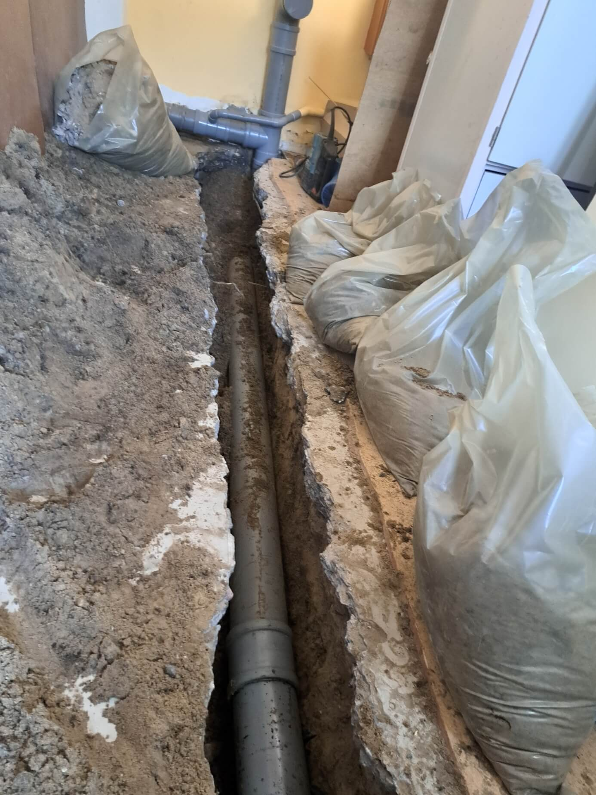
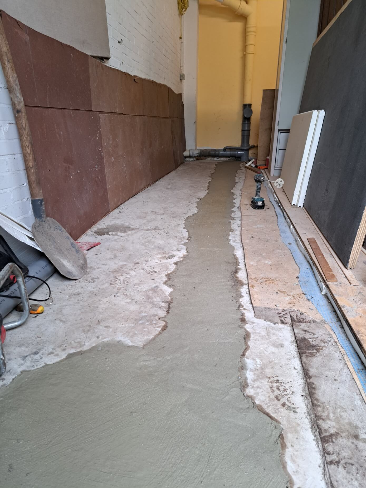
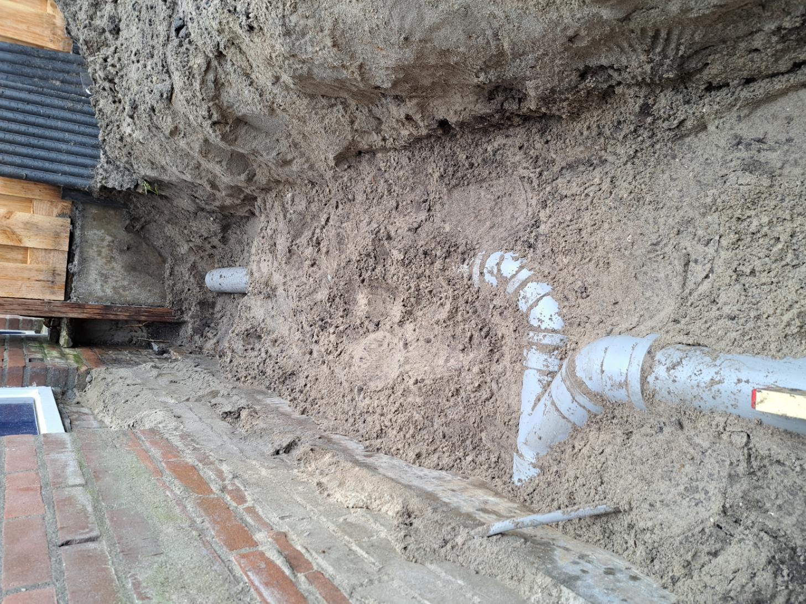
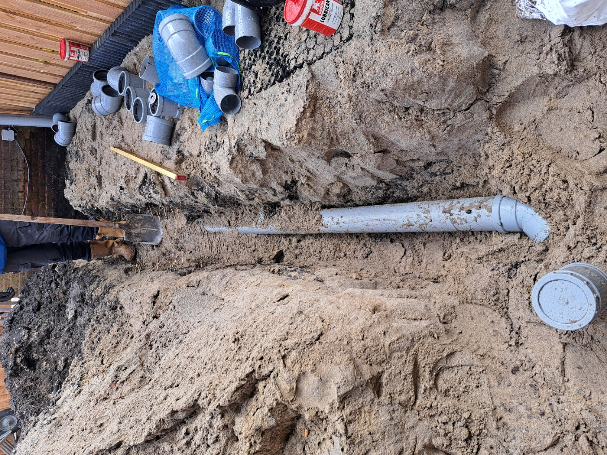
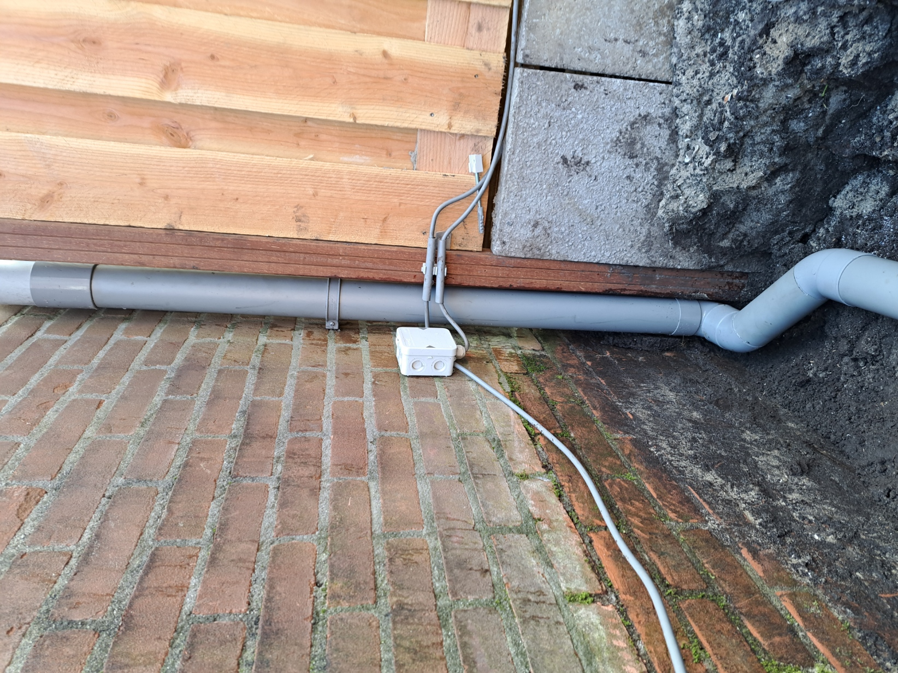
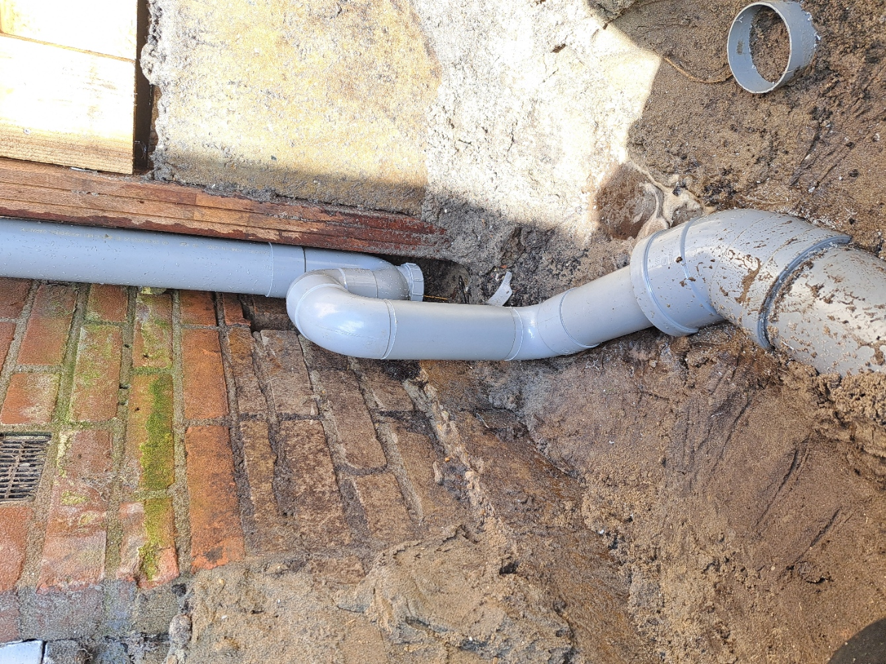
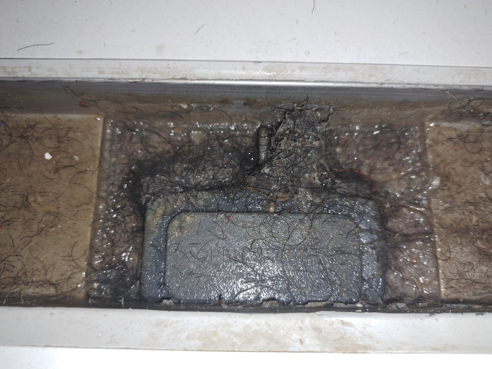
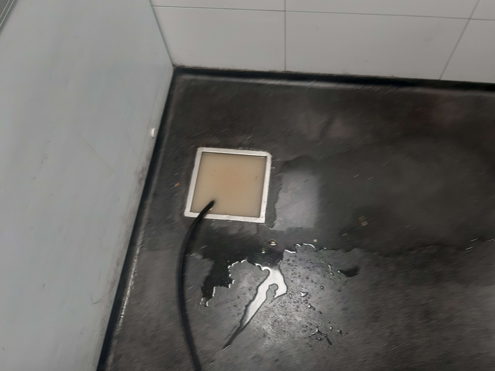

Rioolreparatie en nieuwe aanleg – woning
Betonnen vloer opengehakt, oude gresleiding verwijderd en vervangen
door een nieuwe PVC rioolleiding. Aangesloten op bestaande
gemeenteaansluiting en vloer professioneel hersteld.

betonnen vloer opengehakt + nieuw PVC

Betonnen vloer hersteld
Uitgevoerde werkzaamheden
- Betonnen vloer opengehakt om de riolleiding bereikbaar te maken
- Oude gres rioolleiding volledig verwijderd
- Nieuwe PVC rioolleiding aangelegd met correcte bochten
- Aangesloten op bestaande gemeentelijke aansluiting
- Vloer opnieuw dichtgestort en netjes afgewerkt
🛠️ Type werk: Rioolreparatie & nieuwe aanleg
Nieuwe rioolaanleg en hemelwaterafvoer – achtertuin
Twee nieuwe hemelwaterafvoeren aangelegd in de achtertuin.
Nieuwe verzamel leiding geplaatst en aangesloten op bestaande geveldoorvoer.
Voorzien van ontstoppingsstuk voor toekomstig onderhoud.

Uitgraven van de tuin voor nieuwe rioolaanleg.

Aanleg van nieuwe PVC rioolleiding in de tuin.

Aanleg van nieuwe hemelwaterafvoer.

Plaatsing van een hemelwatersifon.

Ontstoppingstuk geplaatst voor toekomstig onderhoud.
Uitgevoerde werkzaamheden
- Sleufen gegraven in de tuin
- 2 nieuwe hemelwaterafvoeren aangelegd met correcte bochten en sifon
- Nieuwe PVC rioolleiding aangelegd met correcte bochten
- Aangesloten op bestaande geveldoorvoer aansluiting
- de tuin redelijk weer gedicht de klant wilde zelf bestraten
🛠️ Type werk: Rioolreparatie & nieuwe aanleg
Rioolvernieuwing huisaansluiting – voortuin
Voortuin uitgegraven, oude gresleiding verwijderd en vervangen door PVC.
Aangesloten op gemeenteaansluiting met ontstoppingsstuk voor toekomstig onderhoud.
Tuin netjes hersteld en opnieuw bestraat.

Uitgraven van de voortuin voor vervanging van de rioolleiding.

Oude gresleiding vervangen door PVC rioolleiding.

Nieuwe aansluiting op het gemeentelijke riool.

Ontstoppingstuk geplaatst voor toekomstig onderhoud.
Uitgevoerde werkzaamheden
- Riolering in de voortuin uitgegraven
- Oude gres rioolleiding volledig verwijderd
- Nieuwe PVC rioolleiding aangelegd met correcte bochten
- Aangesloten op bestaande gemeentelijke aansluiting
- Ontstoppingstuk geplaatst
- Straatwerk weer terug gelegd
🛠️ Type werk: Rioolreparatie & nieuwe aanleg PVC & Straatwerk
Rioolvernieuwing, huisaansluiting & hemelwaterafvoer & Verzamelput
Ik heb de riolering en verzamelput vrijgegraven hierna, de verzamelput verwijderd en de hemelwater aangesloten op de huisaansluiting.
Gelijk een ontstoppingsstuk geplaatst voor toekomstig onderhoud.

Uitgraven van de voortuin voor vervanging van de rioolleiding.
.jpg)
Verzamelput verwijderd.
.jpg)
ontstoppingsstuk voor toekomstig onderhoud.
Uitgevoerde werkzaamheden
- Riolering in de voortuin uitgegraven
- Verzamelput verwijderd
- Nieuwe PVC rioolleiding aangelegd met correcte bochten
- Aangesloten op bestaande huisaansluiting
- Ontstoppingstuk geplaatst
🛠️ Type werk: Rioolreparatie & nieuwe Aanleg
Verstoppingen in de praktijk
Voorbeelden van ernstige verstoppingen door vet, haar, doekjes en ophoping in pompen en douchegoten.
Problemen verholpen zonder onnodige sloop.

Douche verstopping uiteindelijk een kraai ( na vederen onderzoek is deze in de standleidng gekomen vanaf het dak en zorgde voor verstopping).

Douchegoot verstopping ook deze dient u schoon te houden.

Verstopping van een pomp wat u ziet zijn vochtige doeken.

Verstopping vloerput in de horeca.